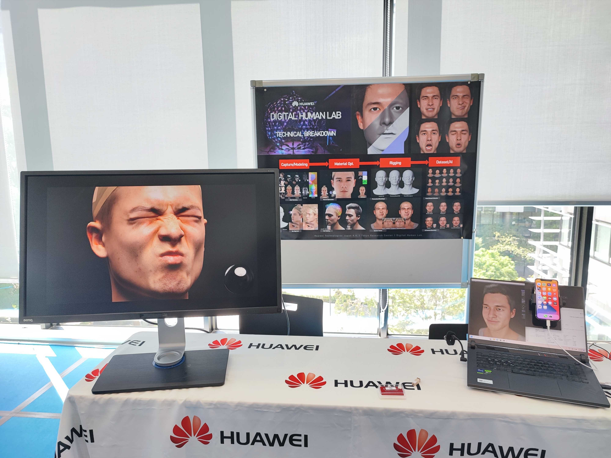
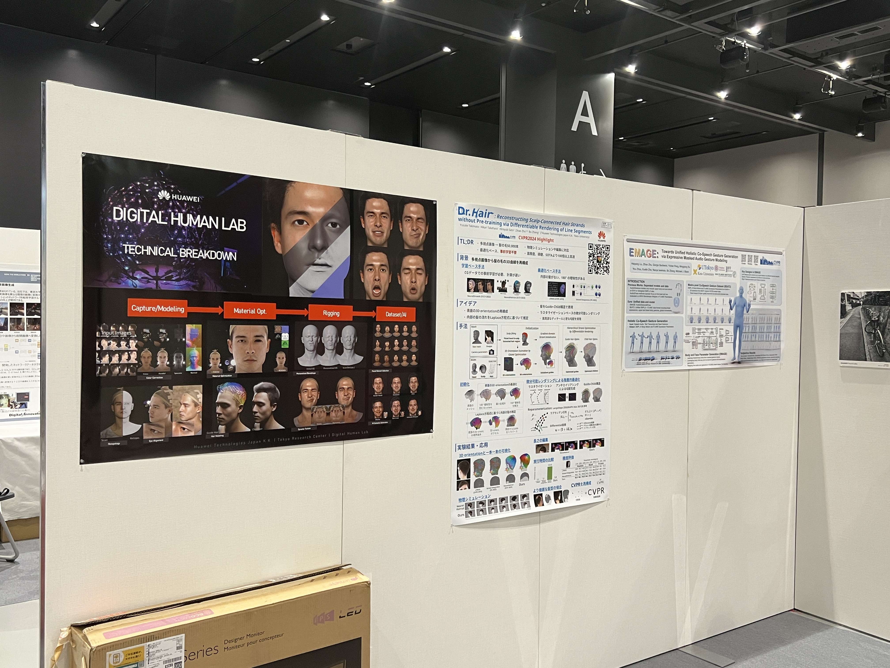
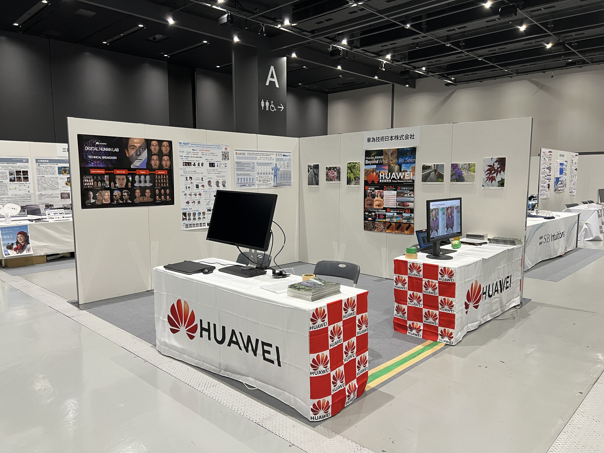

From 2019 to 2024 we developed an animatable digital-human modeling framework that reconstructs high-fidelity faces from multi-view scans captured with a Light Stage setup. The goal was a production pipeline that turns a raw scan into a fully riggable, animation-ready facial asset.
At Visual Computing (VC) and MIRU — leading venues in the CG and CV communities in Japan — we demonstrated live facial animation driven by a smartphone capture, showing the asset being puppeteered in real time directly from a phone.

Game-engine compatibility
Our key contribution was high compatibility with real-time game engines such as Unity and Unreal Engine. Because the assets are fully mesh-based and driven by blendshapes — rather than neural or volumetric representations — they slot directly into existing engine pipelines and run efficiently on commodity hardware.
Pipeline
The framework covers the full path from scan to a deployable, animatable asset:
- Retopology — converting dense scan geometry into a clean, animation-friendly mesh.
- Texture optimization — building consistent, efficient texture maps for real-time use.
- Eye alignment — accurately fitting and positioning the eyes within the face.
- Hair growing — generating strand-based hair on the reconstructed scalp.
- Personalized blendshapes — deriving an identity-specific expression rig.
- Dynamic texture — expression-dependent texture detail for added realism.
- Facial retargeting — driving the asset from captured performance, with real-time rendering.
- Motion generation — synthesizing human conversational gestures to animate the digital human.
From research to service
The collected animatable facial assets were transferred into facial-modeling tools, and the pipeline was offered as an automatic facial-modeling service that turns a scan into a finished asset, provided to facial-scanning company Crescent Inc., which launched a Digital Human creation service based on it.
Demonstrations



References
Related publications from this project (2019 – 2024):
- Haiyang Liu, Zihao Zhu, Giorgio Becherini, Yichen Peng, Mingyang Su, You Zhou, Naoya Iwamoto, Bo Zheng, Michael J. Black, “EMAGE: Towards Unified Holistic Co-Speech Gesture Generation via Expressive Masked Audio Gesture Modeling.” CVPR 2024, 2024.01. [ Project Page ]
- Yusuke Takimoto, Hikari Takehara, Hiroyuki Sato, Zihao Zhu, Bo Zheng, “Dr.Hair: Reconstructing Scalp-Connected Hair Strands without Pre-training via Differentiable Rendering of Line Segments.” CVPR 2024 (Highlight). [ Project Page ]
- Takumi Kitamura, Naoya Iwamoto, Diego Thomas, Hiroshi Kawasaki, “Two Step Approach for Animatable Avatar.” CGI 2023, 2023.09.
- Haiyang Liu, Zihao Zhu, Naoya Iwamoto, Yichen Peng, Zhengqing Li, You Zhou, Elif Bozkurt, Bo Zheng, “BEAT: A Large-Scale Semantic and Emotional Multi-Modal Dataset for Conversational Gestures Synthesis.” ECCV 2022, 2022.10. [ Project Page ]
- Haiyang Liu, Naoya Iwamoto, Zihao Zhu, Zhengqing Li, You Zhou, Elif Bozkurt, Bo Zheng, “DisCo: Disentangled Implicit Content and Rhythm Learning for Diverse Co-Speech Gesture Synthesis.” ACM Multimedia 2022, 2022.10. [ Project Page ]
- Takumi Kitamura, Diego Thomas, Naoya Iwamoto, Hiroshi Kawasaki, “Real-time Animatable Avatars with a Rigged Human Outer-shell.” MIRU 2022 (short oral), 2022.06.
- Yusuke Takimoto, Hiroyuki Sato, Hikari Takehara, Keishiro Uragaki, Takehiro Tawara, Xiao Liang, Kentaro Oku, Wataru Kishimoto, Bo Zheng, “Dressi: A Hardware-Agnostic Differentiable Renderer with Reactive Shader Packing and Soft Rasterization.” Computer Graphics Forum (Eurographics 2022), 2022. [ Paper ]
- Haiyang Liu, Zihao Zhu, Naoya Iwamoto, Yichen Peng, Zhengqing Li, You Zhou, Elif Bozkurt, Bo Zheng, “BEAT: A Large-Scale Semantic and Emotional Multi-Modal Dataset for Conversational Gestures Synthesis.” arXiv, 2022.03. [ Project Page ]